こどもべやの いとしご
ママの むねは
こどもが かけこむところ
こわい あぶない かなしい
まわりが まっくらなとき
ほらほら ねむっている
あのこから こえの ない
いのりの うたが きこえる
やすらかな こころの
こどもの キスは
くちびるから ながれでる
あいの しるし なんどでも
つたわる すてきな おもい
おんなのこの よろこびが
あふれそうなほど いっぱい
ゆめの ぶたいは いつも
しあわせな おうち
（お母さまがたへ）
確かな話では、『ふしぎの国のアリス』は、５歳から１５歳までのおおぜいの子どもたちに読まれたとか。同じように、１５歳から２５歳の子どもたちにも。それだけでなく、２５歳から３５歳の子どもたちにも。さらに、まさかまさか、まだ元気いっぱいで、すれてもいない、あかぬけてもいない、あきらめきってもいない、生き生きした子どもたち、子どもの頃から湧き上がる喜びの泉をそのままに欲しがる子どもたち、その長年のお話が語られぬままうやうやしく葬られるような、「それなりの」お歳の子どもたちがいらっしゃって、その方たちににまで読まれるとは。
そこで今回目指すのは（むちゃかな？）、０歳から５歳の子どもたちに読んでもらうことです。読む？ いや、違う！ むしろ、めくって、きゃっきゃ喜んで、端を折り曲げて、しわくちゃにして、キスしてほしいのです。読み書きのできない、えくぼのある幼い子どもたちに。子ども部屋をゆかいなさわぎ声で、その心の奥の奥を、安らかな幸せでいっぱいにしてほしいんです！
たとえば、昔知り合った子どもにこんな子がいまして――女の子には、どんなものでもひとつでじゅうぶん、パンふたつ、オレンジふたつ、何かふたつってほしがってると、きっと「がめつい」わるい子になっちゃうぞって、しつこく言いつけられてて――そんな子がある朝、ベッドで体を起こして、２本ある自分の小さなあんよをまじまじと見つめて、こうつぶやいたんです。ふと、ばつわるそうに、「まめちい！」
１８９０ イースターの時節に
［＃改丁］むかしむかし アリスという おんなのこが いてね、 とっても へんてこな ゆめを みたんだ。
いったい どんな ゆめだったか、 ききたい？
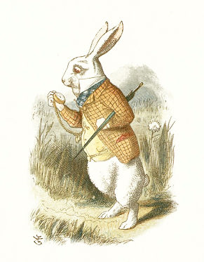
さあて、 これが はじめの ばめん。 しろウサギが すぐそばを おおあわてで はしっていくところ、 アリスと すれちがいざま あしを とめて ポケットの とけいを とりだしてね。
そんなの おもしろくないって？ よく みてごらんよ、 ウサギが とけいを ポケットに いれて もちあるいてるんだよ？ そりゃあ ウサギだって とけいを もつなら ポケットに いれるってもんさ。 くちに いれたって もちはこべないしね ―― それに はしりまわるんなら、 てが たりなくなるし。
あと おめめが あかくない？（しろウサギって みんな おめめが あかいと おもうんだけど。） みみも あかい、 きている うわぎは すてきな ちゃいろ、 それにほら ポケットから あかい ハンカチが のぞいてる。 ほかにも あおの ネクタイやら きいろの チョッキとか、 ほんとに とっても おしゃれで。
「やんぬるかな！」と ウサギさん。「ちこくで おじゃる！」 いったい どこへ ちこくしそうなのかな？
うん、 それはね ごせんさまの ところなんだ。（もうちょっとしたら だいどころにいる そのひとの えが でてくるからね。） ごぜんさまはね いつも いらいらしてる おばさまのこと。 ウサギさんは またせたりしたら ひどく しかられるって おもってね。 かわいそうに これでもかってくらい びくびく。（どんなに ぶるぶるしてたか わかる？ ちょっと ほんを ゆすってごらん、 みぎひだりに。 ほら、 ぶるぶるしてる。） だってね ウサギさん ばつとして くびを ちょんぎられるかもしれないんだよ。 ハートの クイーンが いつも やることなんだけど、 はらを たてたら ちょきん（さしえは また あとでね）。 といっても そのひと いつも ちょんぎれって いいつけるだけで、 そうなると おもいこんでるんだけど じつは だあれも そんなこと しない。
はてさて、 しろウサギが はしりぬけていったんだけど、 アリスは そのさきが きになってね。 だから ついてったんだ。 で、 はしって はしっていると いきなり ウサギあなに おっこちちゃって。
ずっと ずーっと おちつづけてね。 ぴゅ――うう――うう、 このまま せかいを まっすぐ つきぬけて、 うらがわに でちゃうんじゃないかって アリスは そんな きがしてきて！
ふかい ふかい いどみたいなのに おみずは ぜんぜん なくって。 こんなところへ ほんとに おちちゃったら どんなひとだって きっと しんじゃう。 でもほら ゆめのなかだから おちたって けがひとつ ない。 だって おちてると おもってるあいだも ほんとは よこになって なんのこともなく ぐっすり ねむってるだけなんだから！
それでも いつかは あなのそこに たどりつくわけで、 アリスは うずたかく つまれた おちばと えだのうえへ どすん。 けがひとつ なく ぴょんと おきあがると また ウサギのあとを おいかけたんだ。
こうして アリスの へんてこな ゆめが はじまったってわけ。 こんど しろウサギを みかけたらね、 アリスちゃんみたく へんてこな ゆめを みてみたら いいんじゃないかな。
［＃改ページ］
というわけで アリスは ウサギあなを おっこちたあと じめんのなかを えんえん はしってたんだけど、 きがついたら いきなり おおきな ひろまに いてね、 まわりに ぐるりと ドアが いっぱい。
ところが どのドアも かぎが かかってて。 てことは かわいそうに アリスは ひろまから でられない。 だから なんだか かなしくなってきてね。
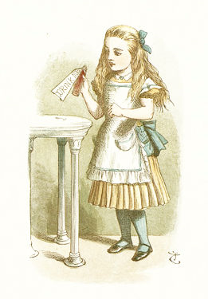
それでも しばらくしてから テーブルのそばに いって。 ぜんぶ ガラスで できていて さんぼんあし（さしえでは ２ほんが はっきり、 のこりの １ぽんが ちらっと みえてるよね、 わかる？）、 で そのテーブルのうえに ちっちゃな かぎが あった！ ひろまを ぐるりと まわって、 これで ドアが どれか あかないか ためしてみたんだけど。
かわいそうな アリス！ そのかぎ どのドアも ひらけなくって。 でも さいごに やってきた ちっちゃな ドア、 するともう うれしいのなんの、 かぎが ぴったり あったんだ！
そのちーっちゃな ドアを あけて、 しゃがみこんで なかを のぞきこんだんだけど、 なにが みえたと おもう？ もう とーっても すてきな おにわで！ そこに いきたくって いきたくって！ なのに ドアが ちっちゃすぎるんだ。 からだを おしこんでも とてもむりで。 きみが ねずみの すあなに はいれないのと おんなじこと！
かわいそうに アリスちゃんは しっかり とじまりして、 かぎを テーブルに もどしてね。 すると さっきまで なかったものが あるってことに きがついて（もういちど さしえを みてね）、 これ いったい なんだと おもう？ こびんだよね、 ラベルが ついていて そこには 「ノンデ」の もじ。
そんなわけで くちを つけてみる。 すると とっても おいしくて、 あらためて いっきのみ。 そのあと もう へんてこなことに なってさ！ おもっても みないことだよ。 ふふ、 じつはね。 アリスが ちいさく ちいさくなっていって、 さいごには ちっちゃな おにんぎょうさんくらいの おおきさに なったんだ！
そこで ひとりごと。「あら このおおきさなら ちいさな あのドアも うまく とおりぬけられてよ！」ってことで はしりだす。 でもね たどりついた ドアは あかないわけで、 かぎは テーブルのうえ、 しかも これじゃあ とどかない！ どうして しっかり とじまりなんか しちゃったんだろうね！
はてさて、 そこで また みつけたのが ちっちゃな パンケーキ。 こんどは こげあとが 「タベテ」って ことばに なってて。 なので さっそく たべて ぜんぶ のみこんだ。 そのあと どうなったと おもう？ うん、 おもいも よらないこと！ ふふふ、 じつはね。
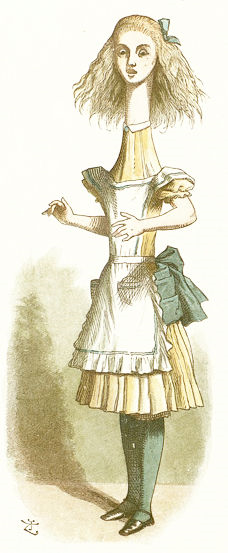
アリスは おっきく おっきーくなっていってね。 せなんか もとよりも たかくって！ こどもよりも おっきく！ おとなよりも おっきく！ ぐんぐん にょきにょきと！ えを みてごらん、 こんなに のびちゃってさ！
いったい どっちがいいと おもう？ ネコちゃんくらいの おおきさの ちっちゃな アリスと、 てんじょうに あたまを ぶつけっぱなしの おっきな アリス。
［＃改ページ］
もしかして アリスが たのしんでるとか おもってる？ ちいさい パンケーキを たべて きづいたら とんでもなく おっきくなってたからって。 そりゃあ なんなく ガラステーブルから かぎを ひろえるし、 ちっちゃな ドアも あけられるけど。
うん そりゃあ できるとも。 でもね、 とおれないのに ドアを あけて どうなるって いうの？ ひどいってもんじゃないよ、 かわいそうに！ あたまを ゆかちかくまで ひくくすれば、 かためで なんとか のぞけるくらいなんだ！ でも できるのは それだけ。 こう おおきくなってしまうと、 すわりこんで、 むねが さけそうなくらい おおごえで なくのも むりない はなしさ。
えーん えーん ないて。 そのうち なみだが ひろまの まんまんなかに こぼれていって、 かわが ながれるみたいに なって。 あっというまに おおきな なみだまりが できて、 ひろまの はんぶんが ひたっちゃった。
もう どうしようもないとこだったんだけど、 そこへなんと たまたま しろウサギが ごぜんさまのもとへ むかうところ このひろまを とおりがかったんだ。 めいっぱい めかしこんでて、 かたてには しろの かわてぶくろ ひとくみ、 もう かたてには ちいさな おうぎ。 ぶつぶつ ひとりごとを いっててね、「あいや、 ごぜんさま、 ごぜんさま！ おまちさせて かんかんだなんて いやでおじゃる！」
なのにさ アリスに めもくれずで。 そこで くちを あけて 「もし、 よろしくって ――」 なんていうと てんじょうから こえが してるみたいで。 なにせ あたまが たかーいところに あったからね。 すると ウサギは ものすっごく おびえて。 てぶくろと おうぎを とりおとして、 ぜんそくりょくで にげてった。
そこで ほんっと へんてこなことに なって。 アリスが おうぎを とりあげて じぶんで あおぎだしたんだ。 すると ごらんあれ、 みるみる ちいさくなって、 １ぷんも したら ネズミくらいの おっきさに！
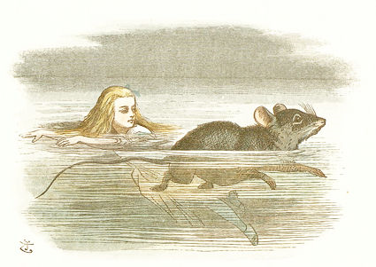
ここで さしえを みてね。 つぎに おこったこと もう わかるよね？ ほんとに うみみたい、 ね？ でも まちがいなく これは さっきの なみだの いけ ―― ぜんぶ アリスのなみだで できたものなんだ！
そういうわけで アリスは いけに ぼちゃん。 ネズミも ぼちゃん。 いろんなのが いっしょになって およいでる。
このえの およいでる アリス、 かわいくなあい？ みなもの したあたり、 アリスの あおい くつした みえるよね？
でも このネズミ どうして こんなに あわてて およいで アリスから はなれようとするのか。 はて そのわけは、 アリスが イヌネコについて はなしだしたからなんだ。 ネズミは いつだって イヌネコの はなしなんか いやだからね！
きみが じぶんの なみだで できた いけを およいでるとして、 そこで だれかが おべんきょうとか おくすりのことを はなしだしたら、 やっぱり めいっぱい およいで どこか いっちゃいたくならない？
［＃改ページ］
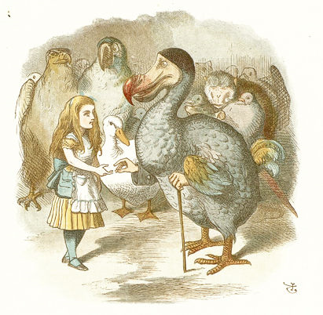
アリスと ネズミが なみだの いけから あがると、 やっぱり ずぶぬれで。 たくさんいた へんてこ いきものたちも おんなじで、 みんな いっしょに おっこちててね。 そこにいたのは ドードー（まんまえに いる おおきな とりで、 つえに よっかかってるね）、 それと アヒルに インコ（アヒルの まうしろで あたまごしに みてる やつね）、 あと こどもワシ（インコの ひだりがわに いる やつ）とか そのほか いろいろ。
さてところで そのみんなだけど どうやって からだを かわかしたものか さっぱり わからなくって。 けれども ドードーが ―― あたまの いい とりだから ―― どーどーめぐりを するのが よろしい なんて いってね。 いったい なんのことだと おもう？
わからない？ だったら きみは まだまだ こどもだね！ じゃあ よおく きいてね、 すぐに ちゃんと わかるから！
まずは はしる コースを つくること。 そのかたちは まるなんだけど とりあえず ちゃんと まるになって ひとつに つながってれば なんでもいい。
とにかく やるひとは コースの あちこちに たって、 くっつきすぎなければ なんでもよくて。
しかも 「いちについて よーいどん！」なんて かけごえも いらなくて、 みんな すきなときに はしりだせばいいし、 すきなときに やめていい。
そこにいた いきもの、 アリスと みんなは ぐるぐる はしりっぱなしで それを かわききるまで つづけたんだ。 で、 さいごに ドードーが みんなの かちって いって、 みんな ごほうびが もらえることに！
もちろん アリスが ごほうびを あげる やく。 とはいえ あげるほどのものも なくってね、 たまたま ポケットに ドライフルーツが あったもんだから、 ひとりひとつずつ みんなに わけた。 すると アリスのぶんの ごほうびが たりなくって！
そこで どうなったと おもう？ あと アリスが もってたのは、 おさいほうの ゆびぬきだけ。 ほら さしえを みて、 どうなったか わかるよね。
「こっちへ かしなされ。」って ドードーが いった。
で、 ドードーは ゆびぬきを うけとって、 また アリスに かえして、 こんなことば。「みごとな このゆびぬきを われらより おうけとりくだされ！」 というわけで そのばの いきものが ぱちぱち わーわー。
こんな へんてこな おくりものって ある？ かんがえてもみてよ、 おたんじょうびプレゼントを くれるってひとが、 きみの おもちゃばこのところへ いって、 そこの きれいな おにんぎょうを とりだして 「はい、 いいこだから このすてきな おたんじょうびプレゼントを あげよう！」なんて いうのと、 まだ もってない あたらしいものを くれるのと、 どっちが いい？
［＃改ページ］
さあて つぎの おはなしは、 しろウサギの おうちで アリスが どうしたか。
おぼえてる？ ウサギが てぶくろと おうぎを おとしたときのこと。 アリスの こえが そらから きこえてきたのかって びっくりしたんだよね。 だから てぶくろも おうぎも ないままじゃあ そりゃあ ごぜんさまのところへも おうかがいできない。 そこで ちょっとしてから さがすために ひきかえしたんだ。
ドードーと へんてこどうぶつたちが どこかへ いっちゃうころには、 アリスも ひとりきりで あたりを うろついててね。
で、 ウサギさん どうしたと おもう？ なんと アリスを じぶんちの メイドさんと かんちがいして、 あれこれ いいつけだしたんだ！ 「メリアン！ いますぐ うちに いって、 てぶくろと おうぎを とってくるでおじゃる！ いそぐでおじゃる！」
ひょっとすると あかい おめめは まえが あんまり みえないのかも。 だって アリスと メイドさんは にてもにつかないんだよ？ それでも とっても いいこだったから、 ちっとも きをわるくせずに ぜんそくりょくで ウサギの おうちへ むかってね。
つごうよく ドアは あいてて。 だって ちりんちりん やることになったら、 きっと ほんものの メリアンが ドアを あけにくるからね。 そうしたら アリスは なかに いれてもらえない。 それから うんよく ほんものの メリアンには あわないまま かいだんを とことこ のぼれて。 アリスが どろぼうだって つかまえられたら たいへんだからね！
あがって すすんで ウサギの おへやに はいると、 そこの テーブルのうえに てぶくろが おいてあったから、 さっと とって でていこうとした そのとき、 たまたま めにはいったんだ。 テーブルのうえの こびんが。 もちろん あのことば 「ノンデ！」って ラベルつき。 そりゃあ アリスも のむよね！
まったく、 よかった よかった。 じゃない？ だって ここで のまなかったら、 これから はなす すてきな おはなしも おこらなかったんだから。 そうなると やっぱり ざんねんだよね？
もう アリスの おはなしにも なれてきたから、 つぎに どうなるか わかるよね？ むりなら きいてて。
おっきく おっきーくなったんだ。 ほんの あっというまに おへやは アリスで ぎゅうぎゅう、 まるっこい びんに ジャムが ぎっしり つまってる、 ちょうど ああいう かんじ！ てんじょうまで ずっと アリスで、 おへやの どのすみにも アリス！
ドアは うちがわに ひらくものだったから、 やっぱり どうやっても あく すきまが ないわけで。 そのとき ウサギが まちくたびれて じぶんで てぶくろを とりにかえってきたんだけど、 もちろん なかに はいれなくって。
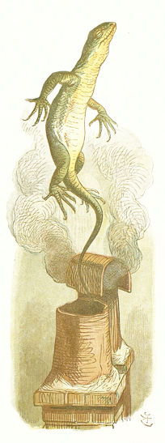
で、 どうしたと おもう？（さあて ここで さしえ。） トカゲの ビルを おうちの やねに のぼらせて、 えんとつを おりてけって いいつけたんだ。 ところが たまたま アリスの かたあしが だんろに つっこんでてね。 ビルが えんとつを おりてくる ものおとが したとき、 かるく ちょこんと けりあげちゃったから、 ビルは はじきとばされて、 おそらへ ぴょーんと でっちゃったんだ。
かわいそうな ビルくん！ そう おもわない？ きっと ものすごく ふるえてたよ！
［＃改ページ］
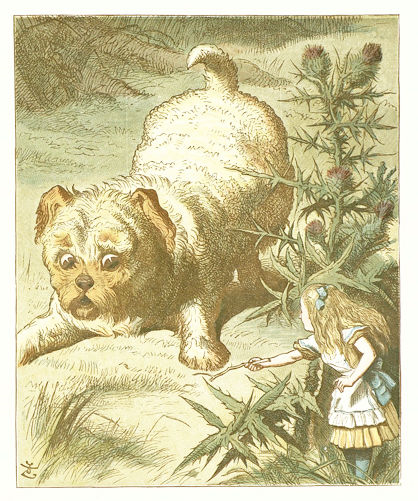
えっ、 そんなワンコちゃんには みえないって？ でもほら、 いまは アリスのほうが ちっちゃくなっちゃったから。 そういうわけで ワンコが おっきく みえる。 しろウサギの おうちで みつけた ちいさな ふしぎな パンケーキ、 それを ひとつ たべた アリスは ぐんぐん ちいさくなって そのまま ドアを とおれるようになってね。 そうでないと もう おうちから そとへ でられないところだった。 かわいそう、 じゃない？ だって これから はなす へんてこな ことなんて ゆめにも おもってなかったんだもん。
とにかく ほんとは ちいさな ワンコ、 ね。 かわいい ペットじゃ なあい？ なら ちょっと このようすを みて、 アリスの さしだした ぼうきれに ほえてるよね！ ほら アリスも ちょっと こわがってる、 ずーっと。 だって でっかい アザミの かげに かくれてるし、 こっちに とびかかってくると いけないからね。 そうなったら ４とうだての ばしゃに ひかれたのと おんなじくらい アリスが ひどいことに なっちゃう！
ペットの ワンコちゃん きみの おうちでも かってる？ いるなら いつも イヌに やさしく、 ちゃんとした えさを あげてると いいんだけど。
むかしむかし あるところに ぼくの しりあいの こどもたちが おりました。 せのたけは きみと おなじくらい。 ペットに ワンコを かっておりました。 なまえは ダッシュ。 これは そのこどもたちから きいた、 たんじょうびの ごちそうを あげたときの おはなし。
「しってる？ あるひね、 そういえば きょう ダッシュの たんびょうびだって なって、 いったの。『ダッシュに たんじょうびの ごちそうを あげようよ。 あたしたちも たんじょうびに もらうでしょお？』 でね、 いっぱい かんがえて 『じゃあ なにが いちばん いいかな、 じぶんたちの たんじょうびなら？』 でね、 また いっぱい かんがえて さいごに みんなで ひとつに きめたの。『じゃあ オートミールの おかゆだね、 ぜったい！』 だからね、 ダッシュも ぜったい きにいるって おもったの。
おてつだいさんの とこに いって、 ひとさら おかゆを つくってって いってね、 それから ダッシュを おうちに よんできて いったの。『さあ ダッシュ、 おたんじょうびの ごちそう あげる！』 ダッシュが よろこんで とびはねるって おもったのに、 なのに かみついてきて！
だから まえに おさらを おいて、 いったの。『もう ダッシュ、 がっつかないの！ いいこだから おとなしく たべて！』
で、 ダッシュ ぺろぺろって したを つけたんだけど、 そうしたら、 その、 とんでもない かおに なっちゃって！ でね、 あのね、 だいきらいだって、 もう ちっとだって たべるもんかって！ だから あたしたち スプーンで ぜんぶ のどに ながしいれなきゃいけなくって！」
アリスも この ワンコに おかゆを あげるのかな？ するとは おもえないけどね。 そんなの どこにも もってなかったし、 さしえにも おさらが ないしね。
［＃改ページ］
ワンコから にげだしたあと、 アリスが どうなったか しりたい？ ほら じゃれるには ほんと おおきすぎる どうぶつだったからね（たとえば カバの こども。 いっしょに たのしく じゃれられる？ むりだよね、 きっと でっかい あしで ずどんと パンケーキみたく ぺしゃんこに されちゃう！）。 だから きづかれずに にげだせたとき アリスは ほっとしたんだ。
で、 あちこち うろついたんだけど、 なにを したら もとの おおきさに もどれるのか さっぱりで。 そりゃあ なにかを のみくいすれば いいんだろうけど。 これまでも そうだったしね。 でも それが なんなのか おもいも つかなくって。
そんなとき ふと あらわれたのが でっかい キノコ。 せたけが たかくて つまさきだち しないと てっぺんに あるものなんて みえなくって。 で なにが みえたと おもう？ こんなの ぜったいに いいあてらんないね！
なんと おっきな あおムシ。
いまから はじまるのが アリスと あおムシの おはなしなんだけど、 まずは このさしえを よく みてね。
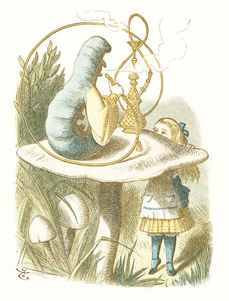
あおムシの まんまえに おいてある へんてこなのは みずギセル。 けむりを すうために つかうんだ。 ながい くだを とおって けむりが、 へびみたく うねうね やってくるってわけ。
で、 あおムシの ながっぱな、 しゃくれあご、 わかる？ というより、 はなみたいな あごみたいなもの、 が ただしいかな？ ほんとは あしのうちの ふたつなんだけど。 ほら イモムシは あしが たくさん あるよね。 そのしたを みてくと どんどん ついてるし。
きっと めんどうだと おもうんだけど、 あおムシは まいばん なくなってないか あんなに たくさんの あしを かぞえるんだって！
それに すっごく めんどうだと おもうんだけど、 どのあしから うごかしたらいいか きめなきゃいけないんだってさ。 なんせ ４０も ５０も あしが あるから、 ちょっと あるくにしても どのあしから うごかしたらいいか きめるだけで それなりの じかんが かかって、 もう あるくどころじゃないよ！
ともかく アリスと あおムシ いったい なにを おはなししたんだろうね？
その、 アリスは いったんだ、 おおきさが いろいろ かわって もう わけが わからないって。
すると あおムシが、 ちょうど いまの おおきさ、 これを どう おもうって きいてきてね。
アリスの へんじは、 もうちょっとくらい おおきくなりたい ―― ８センチじゃあ あんまりな おおきさだって！（８センチを はかってみるとしたら なかゆびくらいの おおきさかな、 ほら このときの アリスが それくらい。）
そこで あおムシが おしえてくれて。 キノコの かたはしを たべると おっきくなって、 もうかたはしを たべると ちっちゃくなれるぞって。
なので アリスが ふたきれ ちぎって おそるおそる くちに いれると、 まあ けっこう いいかんじの せかっこうに なんとか なれてさ！ ようやく ごぜんさまのところへ むかったんだ。
［＃改ページ］
アリスが ごぜんさまのところへ うかがった おはなし、 ききたい？ ほんとに おもしろい おうかがいに なってね。 きたいして いいよ。
もちろん はじまりは ドアの ノック。 でも だっれも でてこなくって。 だから じぶんで あけることに。
さあて さしえに めをやると、 なかに はいった アリスの めに とびこんだものが ちょうど わかる。
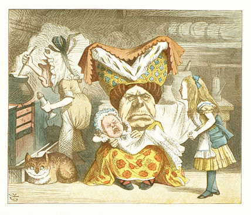
ドアが まっすぐ だいどころに つづいていてね。 ごぜんさまは おへやの まんなかに すわって あかちゃんを あやしてる。 あかちゃんは わんわん。 スープは ぐつぐつ。 コックさんが スープを まぜまぜ。 ネコ ―― チェシアネコが ―― にやにや、 チェシアネコは いっつも そうなんだ。 アリスが はいってきたときは ぜんぶが こんなぐあい。
ごぜんさまは すてきな ぼうしと ガウンを みにつけてる、 よね？ でも ざんねんながら かおは あんまり すてきじゃあなくって。
あかちゃんは ―― まあ きみだって もっと かわいいこ みたこと あると おもうんだけど、 その、 もっと おとなしいこ、 ね。 でもね いま よおく みておいてね、 つぎ でてきたときに わかるかどうか たしかめるから！
コックは ―― まあ もっと うでききの コック ひとりふたり あったこと あるかもね。
でもでも きっと これより ものすごい ネコは みたこと ないはず！ だよね？ ちょっと こんなネコちゃん かってみたくない？ みどりの めが あいらしくって、 えがおも とっても かわいくて。
ごぜんさま アリスには ひどく ぶしつけで。 まあ しょうがない。 その、 じぶんの あかちゃんなのに 「ブタ！」とか よぶくらいだし。 ブタじゃない、 よね？ あと コックに アリスの くびを たたっきれって いいつけたんだけど、 もちろん そんなこと コックは しなくて。 さいごには あかちゃんを こっちに なげつけてきてさ！ だから アリスは あかちゃんを うけとめて、 つれだしたんだ。 そうするしか なかったと おもう。
というわけで おうちから はなれて、 もりを ぬけて、 かわいくない そのあかちゃんを かかえていってね。 すごい じたばたしてたから つかまえておくのも ほんとに たいへんで。 でも さいごには ひだりあしと みぎみみを ぐっと つかめば いいって きづいたんだ。
でも ふつうの あかちゃんを こんなふうに つかんでみちゃあ いけないよ、 めっ！ こんなふうに あやされたい あかちゃんなんて あんまり いないからね！
さて、 あかちゃんは ぶーぶー いいつづけてるわけで。 だから アリスも まがおで いわなきゃいけない。「もし ブタに なっちゃうんなら もう なんにも してあげなくてよ、 いいこと！」
って おわりに かおを のぞいてみたんだけど、 いったい どんなことに なってたと おもう？ さしえを ごらん、 こたえあわせ。
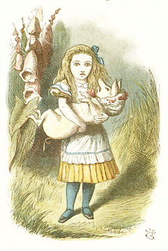
「えっ、 アリスが あやしてるの、 あのあかちゃんじゃ ないよ？」
ほおら、 やっぱり わかんなかった。 だから よく みておいてって いったのに！ うん、 これが あのあかちゃん。 こブタに かわっちゃったんだ！
なので、 アリスは したに おろして、 もりのなかへ はなしてね。 そこで ひとりごと。「ほんっと かわいくない あかちゃん！ でも ブタに なったら ちょっとは ましかも。」
そのとおりだと おもわない？
［＃改ページ］
ひとりぼっち、 ひとりぼっち！ かわいそうな アリス！ あかちゃんどころか ブタも もう いっしょじゃない！
そんなとき チェシアネコが あたまのうえの きに やどってたもんだから、 とっても うれしかったこと わかるよね。
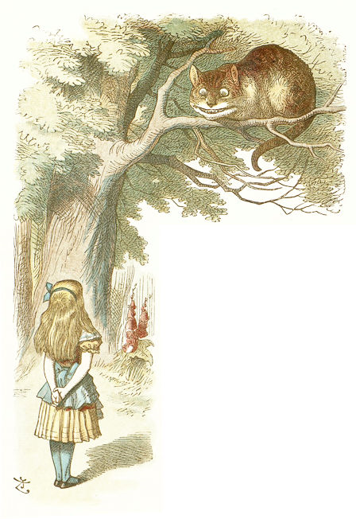
たしかに ネコは とっても すてきな えがおなんだけど、 ちょっと みて、 はが ぎっしり！ アリス すこしだけ ひいてない？
うん、 まあ、 すこし。 でも やっぱり ネコだって はは いるわけで。 それに いらいらしてたら なるべく にやにやは しないしね。 だから それなりに アリスも うれしくって。
アリス とっても おすまししてなあい？ あたまを すっくと もたげて、 りょうてを うしろに まわして、 まるで ネコに ものを おしえてるみたい。
そういえば おしえておきたいことが ちょっと あるんだ。 アリスと ネコの このさしえを みておいてね。 さあて へそを まげないでね、 おねがい！ ほんの まめちしきだから！
きの そばに、 キツネノテブクロが あるの わかる？ これ、 どうして キツネノテブクロって いうか しってる？ もしかして キツネと かかわりあるとか おもってる？ まちがい！ キツネは てぶくろ はめないよ！
もともとは 「こびとの てぶくろ」って いったんだ。 でも 「こび」って きつねの ばけものでも あるからね。
ここで まめちしきは おしまい。 いらいらが おさまるまで ちょっと まってるね。
どう？ すっかり おちついた？ もう だいじょうぶ？ くちの すみも ひんまがってない？ じゃあ つづきを。
「チェッシャにゃん！」って、 アリスが よんでね。（ネコにしては すてきな なまえじゃなあい？）「おしえてちょうだい、 ここから どちらに いったほうが よくって？」
すると ネコは、 ぼうしやの ところへ いきたきゃ こっちの みち、 やよいウサギだったら あっちの みち、 って おしえてくれてね。「どっちも へんにゃ やつ！」って ネコは いうんだけど。
そのあと ネコが きえちゃって！ まるで ロウソクの ひが きえるみたいに！
まあ アリスは やよいウサギのほうへ あるきだすんだけど、 すすんでいくと また そこに ネコが いてさ！ そんなに すぐ でたり きえたりは いやだって いってやったんだ。
すると こんどは ネコも きえるのが すっごく ゆっくりになって、 はじめが しっぽ、 さいごが にやにや。 へんてこじゃあない？ ネコが いなくなってるのに、 にやにやが あるなんて。 みてみたい？
このページの すみを めくってみたら、 にやにやを みてる アリスが でてくるよ。 ネコを みてたときよりも、 ちょっとだけ びくびくしてない、 かな？
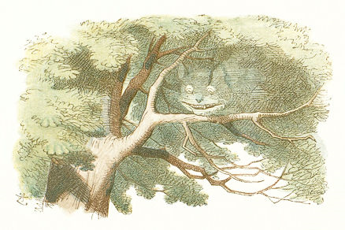
［＃改ページ］
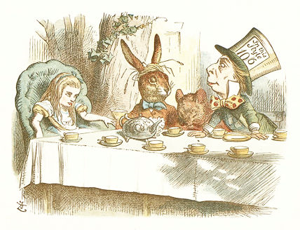
これは おかしな おちゃかい。 チェシアネコと わかれたあと、 アリスは チェシアネコの おしえてくれたとおり、 やよいウサギと ぼうしやに あいにいったわけ。 みつけたとき そいつらは おおきな きのしたで おちゃかいをしていてね。 あいだには ヤマネも すわっていて。
テーブルに ついてたのは この３にんだけだったんだけど、 そのまわりには ずらりと ティーカップが ならんでてね。 テーブル ぜんたいは みえないけど、 ほら さしえの ぶぶんだけでも カップが ９こも あるよね、 やよいウサギの てにあるのも くわえると。
そいつが やよいウサギ。 みみが ながくて、 かみに わらが ぐちゃぐちゃ からまってる。 わらが あるって あたまが おかしい しるしだからね ―― なぜかは わからないけど。 ぜったいに かみのけに くくりつけちゃ だめだよ。 ひとに あいつの あたまは おかしいって おもわれるからね！
それから テーブルの はしに すてきな みどりの アームチェアが あったんだけど、 それが まるで アリスの せきみたいに みえてね。 だから そこへ いって こしを おろしたんだ。
そうして やよいウサギと ぼうしやと ながなが おはなしを して。 ヤマネは あんまり しゃべらなかった。 ほら いつも ぐっすり ねむってるからね、 たまに ちょっと おきたりするだけで。
ねむってるぶんには やよいウサギにも ぼうしやにも つかいがってが いいんだよ、 だって あたまが まるくて ふかふかだから、 まくらみたいで。 ひじを ついても、 もたれかかっても、 きがねなく はなしを しても いいんだ。 ふつうは あたまを まくらがわりに されるのなんて いやだよね？ でも ヤマネみたく ぐっすり ねむってたら、 きづかないよ。 だから きにならないんじゃ ないかな。
ざんねんながら アリスは のみもの たべものを すこしも もらえなくって。 でも しばらくしたら おちゃも バタートーストも ごじゆうに どうぞ ってことに なって。 ただ いったい どのせきで たべたんだろうね、 そもそも おさらじたいが ないし。 おさらが あるのは ぼうしやだけで。 いや、 きっと やよいウサギにも あったかも。 だって みんなで じゅんぐり せきを かえたら（それが このへんてこな おちゃかいの きまりだからね）、 つぎに アリスが すわるのは やよいウサギの せきだし、 そのとき ウサギが じぶんの おさらに ミルクつぼを ひっくりかえしてるって きづいたみたいだし。 きっと おさらと ミルクつぼは おっきな ティーポットの うらに かくれてたんだよ。
このぼうしやは いつも うりものの ぼうしを もちあるいていてね。 あたまに のっかってるのも そもそも うりもの。 ほら、 ねだんが ついてるよね ――「１０」と 「６」―― これは 「ぎんか１０まい どうか６まい」ってこと。 こんなの へんな うりかたじゃない？ あと きれいな ネクタイをつけてない？ ほら いいかんじの きいろい ネクタイ、 あかの みずたまいり。
そいつが たちあがって アリスに ひとこと。「かみを きりたまえ！」 おおきな おせわ、 だよね？ アリスの かみって きらなきゃいけないかな？ とっても かわいらしい ながさだと ―― ちょうど いい ながさだと おもうんだけど。
［＃改ページ］
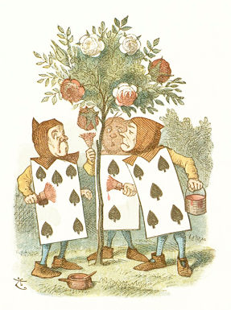
これが まえに おはなしした きれいな おにわの いっかく。 ほら、 アリスは さいごに なんとか ちいさくなれたから、 あのちいさな ドアも ぬけられてね。 たぶん にほんあしで たった ネズミくらいの せたけ。 なので これは もちろん ちっちゃな バラの きで、 こいつらは ちっちゃな にわし。
なんて おもしろい こびとさんたち！ いや、 ひと、 なのかな？ たぶん いきてる トランプなんじゃないかな、 あたまと てあしが ついてるから、 こびとみたいに みえると。 で、 あかい ペンキで なにを しているの、 かな？ と、 いうことで アリスに わけを はなしたんだ。 ハートの クイーンが そのあたりに あかい バラの きが ほしいって いったらしいんだけど、 なのに かわいそうに このにわしくんたちは おおまちがいを しでかして、 かわりに しろいのを うえちゃったんだ。 それで もう びくびくしてね、 だって クイーンさま きっと はらを たてて、 みんなの くびを ちょんぎれって いうに きまってるからね！
ものすごい こわい じょおうさまで、 だれかに はらを たてると きまって そういうんだ。「くびを はねよ！」 だれも だれかの くびを ちょんぎったり しないんだけどね。 だって いうことなんて だれも きかないし。 でも いつも そういうふうに いうんだ。
さあて おいつめられた このにわしたち、 どうしてみたのか わからない？ バラを あかく ぬってみたんだ。 おおあわてで、 クイーンが くるまえに やっちゃえってね。 そのあとなら たぶん クイーンも もともと しろい きだったなんて わからないしね。 そうなれば たぶん こびとたちも くびを ちょんぎられないで すむし！
ほら きに ５りんの おおきな しろバラが あるよね ―― これを みんな あかくするのは けっこう たいへんだよ！ まだ ３つと はんぶんしか おわってないし、 ほら、 それに せめて むだばなしで てを とめたりしなけりゃ ―― がんばろうよ、 こびとさん、 がんばってよ！ そうしないと おわらないうちに クイーン きちゃうよ！ きに しろバラが あるって しられたら どうなると おもう？ きっと 「くびを はねよ！」って。 もう がんばれって、 おまえら！ いそげ、 いそげ！
クイーンが きちゃった！ おこってない？ ああ、 かわいそうな アリスちゃん！
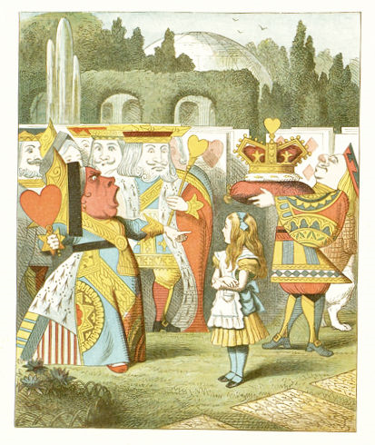
［＃改ページ］
ゲートボールは やったこと ある？ いろんな いろの おおきな きの ボールが あってね、 それを ころがして、 はりがねの ゲートの あいだに とおすんだ。 ながい とってつきの おおきな きづちが あって、 それで ボールを こづいて ころがすんだよ。
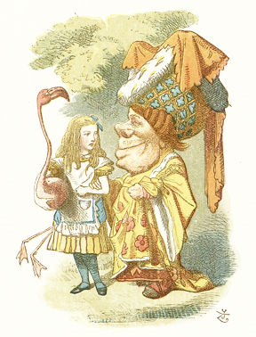
さあて さしえを みてごらん。 ほら アリスが ゲートボールを やってるところだよ。
「でも できてないよ、 なんか よく わかんない おおきいの かかえてるし！ ねえ、 あれじゃあ きづち もてないよ？」
うん、 あのね、 あの よく わかんない おおきいの（ほんとの なまえは フラミンゴなんだけど）、 あれが つちなんだよ！ このゲートボールでは ボールは いきた ハリネズミ ―― しってる？ ハリネズミって ボールみたく まんまるに なれるんだよ ―― で あと つちが いきた フラミンゴって わけ！
それで アリスは ただいま ちょっと おやすみちゅう。 ひさしぶりの おともだち、 ごぜんさまと おはなしするためにね。 もちろん なくさないよう つちを わきに かかえててね。
「でも おともだちじゃないし、 あんなやつ！ あかちゃんを ブタっていうし、 アリスの くびを たたっきれって いったし！」
うん、 あれは ほんの じょうだん。 アリスの くびを たたっきれだなんて。 あかちゃんは ―― まあ ほんとに ブタだったしね！ あのえがお みてごらんよ！ ねえ、 あのくち アリスの あたまより でっかいよね。 でも あれで みえてるのは はんぶんだからね！
でも ちょっとだけ おはなししたところで、 やってきた クイーンが アリスを つれてっちゃってね。 グリフォンと ウミガメフーミに あわせるんだって。
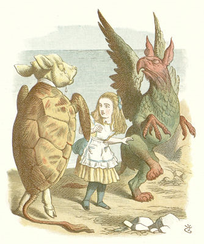
グリフォンが なにか しらないの？ えっ！ じゃあ なにを しってるの？ こいつは もんだいだ。 でもでも、 さしえを ごらん。 あかい あたま、 あかい つめに みどりの うろこ、 このいきものが グリフォン。 これで わかったね。
それから そのとなりが ウミガメフーミ。 あたまが こウシなんだ。 だって ウミガメフーミの スープには こウシの あたまを つかうからね。 これで わかったね。
「でも こいつら なにしてんの、 アリスの まわりで あんなに ぐるぐる？」
えっ、 もちろん わかってると おもってた！ エビの フォークダンスを おどってるんだよ。
グリフォンと ウミガメフーミに つぎ あったとき、 おぎょうぎよく きいてみたら、 きっと また おどってくれるよ。 ただ あんまり ちかよらせないでね。 かわいそうに アリスみたく つまさきを ふまれちゃうから。
［＃改ページ］
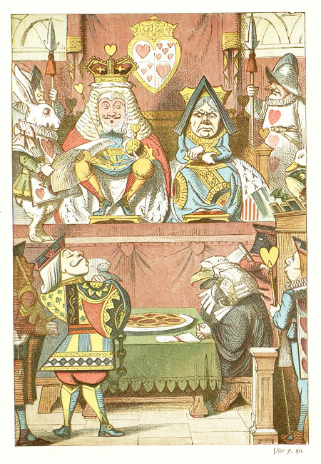
ハートの クイーンが タルトを つくる はなし きいたこと ある？ そのあと どうなったか いえる？
「うん、 あったりまえ！ うたが ぜんぶ おしえてくれるじゃない！
ハートの クインが タルトを つくる
なつの さなか いちにち かけて
ハートの ジャックが タルトを ぬすむ
かくれて こっそり ひとりじめ！」
うん そうだね、 うたは そうなる。 ところが うたが こうだからって ジャックに おしおきするとか なしですよ。 まず わるい やつとして つかまえなきゃ いけなくて、 てくびに くさりを つけて、 ハートの キングのまえに つれてって、 ちゃんとした おさばきを しなきゃね。
さあて このほんの はじめにある おおきな さしえを みれば、 このおさばきが どんなに おおごとか わかるよね。 さばくひとは キング！
キングって とっても えらい、 よね？ でも そんなに たのしくなさそう。 かつらのうえに のってる おおきな かんむりは おもそうで きゅうくつそうだしね。 でも やっぱり どっちも つけとかないと。 でないと あいつが さばくひとで キングだって みんなに わかんないしね。
で、 クイーン なんだか むすっとしてない？ テーブルのうえに あるのは タルトの おさらだけ、 いっしょうけんめい つくったのにね。 それで いたずらな ジャックを みつけて（てくびから くさりが たれてるの わかるよね？）、 おまえが わたしの つくった タルトを ぬすんだんだ、 って。 だから ちょっとくらい むすっとしてたって むりもないってわけ。
しろウサギが キングの そばに たちながら、 あのうたを よみあげてて、 そいつが どんなに いたずらな ジャックかって みんなに つたえててね。 で、 はなしあうひとが（ほら、 はこがたの ざせきに カエルと アヒルの ふたりが みえるよね） そいつの 「ゆうざい」「むざい」 どっちかに きめるってわけ。
さあて これから おはなしするのは、 アリスに なにが おこったか。
でね アリスも はこがたの ざせきの そばに すわってて。 まのあたりにしたひと ってことで よばれたんだ。 まのあたりって なんのことか わかる？ わるいひとが、 おさばきされるようなことを した、 そのげんばを みたってことなんだ。 べつに ただ このおさばきで だいじなことを しってるだけでも いいんだけど。
ところが アリスは クイーンが タルトを つくるとこなんて みてないし、 ジャックが タルトを たべるところも みてない。 ほんとのところ、 なあんにも しらない。 なのに いったい どうして よびだされたのか。 そんなの ぼくにも わからない！
とにかく みんなが よびたがってね。 で しろウサギが おおきな ラッパを ふいて、「アリス！」って おおごえ だして。 で アリスは おおあわてで たちあがって それから ――
それから なにが おこったと おもう？ うん、 スカートが はこがたの ざせきに ひっかかって、 ざせきが ひっくりかえって、 さらに はなしあうひとたちも かわいそうに そこから おっこちちゃって！
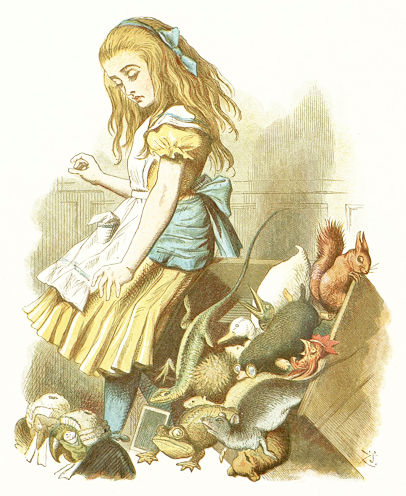
１２にん ぜんいん わかるか やってみようね。 ほら、 おさばきを はなしあうひとの かずは １２のはずだから。 ええと、 カエル、 ヤマネ、 クマネズミに イタチ、 ハリネズミに トカゲ、 チャボ、 モグラ、 アヒルに リス、 で モグラの うしろに ながい くちばしの わめいてる とりが いるね。
でも まだ １１。 あと もうひとり みつけないと。
あっ ちいさな しろい あたまが モグラの うしろから でてる。 ちょうど アヒルの くちばしの した？ とにかく これで １２。
さしえを かいたひとに よると うるさい とりさんは コウノトリの ひなで（もちろん わかったよね？）、 ちいさい しろあたまは ハツカネズミの こどもなんだって。 かわいい どうぶつじゃ なあい？
アリスは みんなを そろりそろり ひろいあげてね。 あんまり けがしてないと いいんだけど！
［＃改ページ］
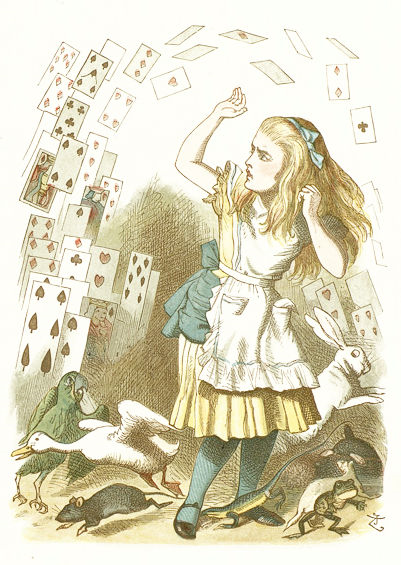
あらあら これは！ いったい どういうこと？ アリスに なにが あったんだ？
さて それを これから できるかぎり おはなしするね。 これは おさばきが おひらきに なったところ。 キングが １２にんに ハートの ジャックの ゆうざい むざいを きめろと いってね ―― つまり タルトを ぬすんだのは そいつなのか、 ほかの やつが たべたのか きめるって ことなんだけどね。 でも いじわるな クイーンは とにかく おしおきするって さきに きめたくって。 こんなの ただしくないよね？ だって ほら、 タルトを ぬすんでないんだったら もちろん おしおきなんか だめだし。 おしおきを うけるにしても じぶんの やったことにじゃないと、 ね？
だから アリスは いったんだ。「がらくたの からっぽ！」
すると クイーンは こういう。「こやつの くびを はねよ！」（これは おこったときの おきまりの ことばだったね。）
で アリスの へんじ。「あんたたちなんか こわくない！ ただの トランプじゃないの！」
となると みんな ぷんすかするわけで。 ちゅうに とびあがって アリスのうえへ みんなして ふりかかってきまして。 まるで ざあざあ にわかあめみたいに。
つぎに どうなったかなんて おもいも よらないよ。 そのつぎはね、 アリスが このへんてこな ゆめから めが さめたんだ。 きづいたら トランプは ただ きから おちてくる はっぱに なってて、 かぜが びゅーんて かおのほうへ ふきおろしてきててね。
アリスみたいに へんてこな ゆめ みられたら、 すてきじゃなあい？
いちばん いい やりかたは こう。 まず きのしたで ねそべってね、 じっと まったあと ついに しろウサギが とけいを てに はしってきたら そこで めを とじて、 あとは アリスちゃんに なったつもりで。
さようなら、 いとしい アリス、 さようなら！
（おしまい）